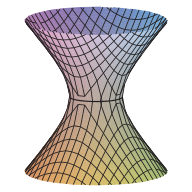

Guia de contribuição
Como contribuir?
O DimasTracker é feito por estudantes, para estudantes. Achou um gabarito errado, resolveu um exercício que ainda não tem solução ou teve uma ideia para o site? Toda ajuda conta — e você não precisa saber programar para várias delas.
1 Jeitos de ajudar
2 Reportar um erro
O jeito mais rápido de ajudar. Você só precisa de uma conta (gratuita) no GitHub.
- Abra uma issue — é como um “chamado” no GitHub. Abrir uma issue ↗
- Escolha o modelo “Erro em gabarito” ou “Sugestão”.
-
Diga onde está o problema: a prova, o item (ex.:
Prova 2 · 4.1.7) e o que está errado. Se souber a resposta certa, melhor ainda!
3 Preparar o ambiente
Para mexer nos arquivos, você vai precisar de:
- Git e uma conta no GitHub — baixar o Git
- Node.js (versão 18 ou mais nova) — só para gerar gabaritos · nodejs.org
- Python 3 — só para adicionar PDFs de exercícios · python.org
- Faça um fork: no repositório, clique em Fork. Isso cria uma cópia do projeto na sua conta.
-
Baixe a sua cópia (troque
SEU-USUARIOpelo seu usuário):git clone https://github.com/SEU-USUARIO/DimasTracker.git cd DimasTracker -
Crie um branch para a sua mudança:
git checkout -b gabarito-4.1.7 -
Abra o site: é só dar dois cliques no
index.html. Não tem build, não tem servidor — é HTML, CSS e JavaScript puros. Se preferir um servidor local:npm run servir
4 Escrever um gabarito
Os gabaritos são escritos em Markdown com fórmulas em LaTeX e depois convertidos para o formato que o site carrega. Você escreve texto normal; as contas ficam entre cifrões.
-
Instale as dependências (só na primeira vez):
npm install -
Copie o modelo
fontes/MODELO.mdparafontes/Prova N/<item>.md. O nome do arquivo precisa ser exatamente o texto do item na lista — por exemplofontes/Prova 1/1.1.10 (a,c).md. -
Escreva a solução. Um exemplo curto:
# Exercício 1.1.1 — Gabarito **Enunciado.** Calcule $AB - BA$ para as matrizes dadas. ## (a) $AB - BA$ $$ AB - BA = \begin{bmatrix} -24 & -20 \\ 58 & 24 \end{bmatrix} $$ > **Resposta:** $AB \neq BA$, o produto não é comutativo. -
Gere o gabarito:
Isso crianpm run gabaritosgabaritos/Prova N/<item>.js. Se alguma fórmula tiver erro de LaTeX, a ferramenta avisa qual é. - Confira no site: recarregue o
index.htmle clique no item.
$x^2 + y^2 = 1$$$ \det(A) = ad - bc $$\begin{bmatrix} a & b \\ c & d \end{bmatrix}\vec{v}, \overrightarrow{AB}> **Resposta:** ...gabaritos/Prova N/figuras/ e use o caminho relativo
figuras/arquivo.png. Prefira PNG com fundo branco — o site mostra imagens sobre um cartão claro.
fontes/ (pode copiar o texto do
site) e gere de novo — o .js antigo é substituído.
5 Adicionar um exercício
-
Coloque o PDF do enunciado em
exercicios/Prova N/<item>.pdf. -
Adicione o item na lista, no topo do
script.js, com o mesmo texto do nome do arquivo:const provas = { 2: [ "3.2.7", "3.2.9", "3.2.13", ... -
Gere as páginas que o visualizador mostra (converte o PDF em imagens nítidas e
preserva os marca-textos):
No macOS/Linux, usepy -m pip install pymupdf # só na primeira vez py ferramentas/gerar-paginas.pypython3no lugar depy. - Escreva o gabarito seguindo a seção anterior (opcional, mas muito bem-vindo).
6 Melhorar o site
O site é propositalmente simples. Algumas combinações para manter assim:
- Sem build e sem frameworks. HTML, CSS e JavaScript puros, que funcionam abrindo o arquivo direto (
file://) e no GitHub Pages. - Código em português, como o resto do projeto:
mostrarProva,.gabarito-area. - Cores só por variáveis (
--fundo,--texto…) definidas no topo dostyle.css, para os temas claro e escuro funcionarem. - Teste nos dois temas e com as seções redimensionadas antes de enviar.
- Mudanças pequenas e focadas são revisadas (e aceitas) muito mais rápido.
7 Enviar a contribuição
-
Salve as mudanças com uma mensagem clara:
git add . git commit -m "Adiciona gabarito do 4.1.7" git push origin gabarito-4.1.7 - Abra um Pull Request: o GitHub mostra um botão Compare & pull request no seu fork. Descreva o que mudou.
- Aguarde a revisão. Pode ser que peçam um ajuste — é normal e faz parte. Assim que for aceito, a mudança vai ao ar sozinha no site em alguns minutos.
Antes de enviar, confira:
8 Mapa das pastas
DimasTracker/
├── index.html a página principal
├── script.js lista de itens e toda a lógica
├── style.css visual e temas (claro/escuro)
├── contribuir.html esta página
├── exercicios/Prova N/ PDFs dos enunciados
├── paginas/ páginas SVG geradas dos PDFs gerado
├── fontes/Prova N/ gabaritos em Markdown
├── gabaritos/Prova N/ gabaritos prontos para o site gerado
├── ferramentas/ scripts de conversão
│ ├── gerar-gabaritos.mjs
│ ├── gerar-paginas.py
│ └── gerar-icone.py
├── icones/ ícone do site
└── vendor/katex/ fontes e estilo das fórmulas